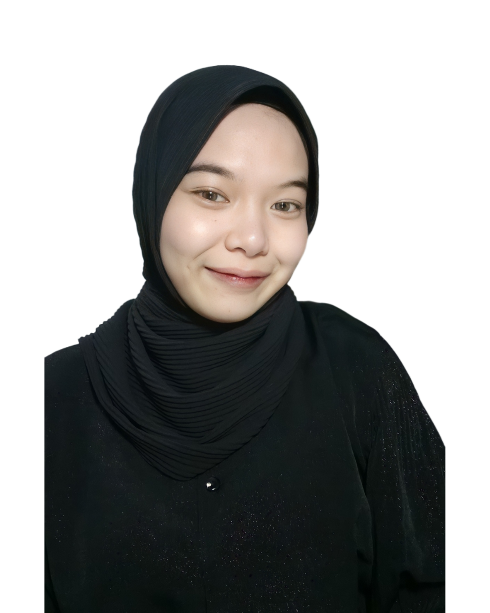
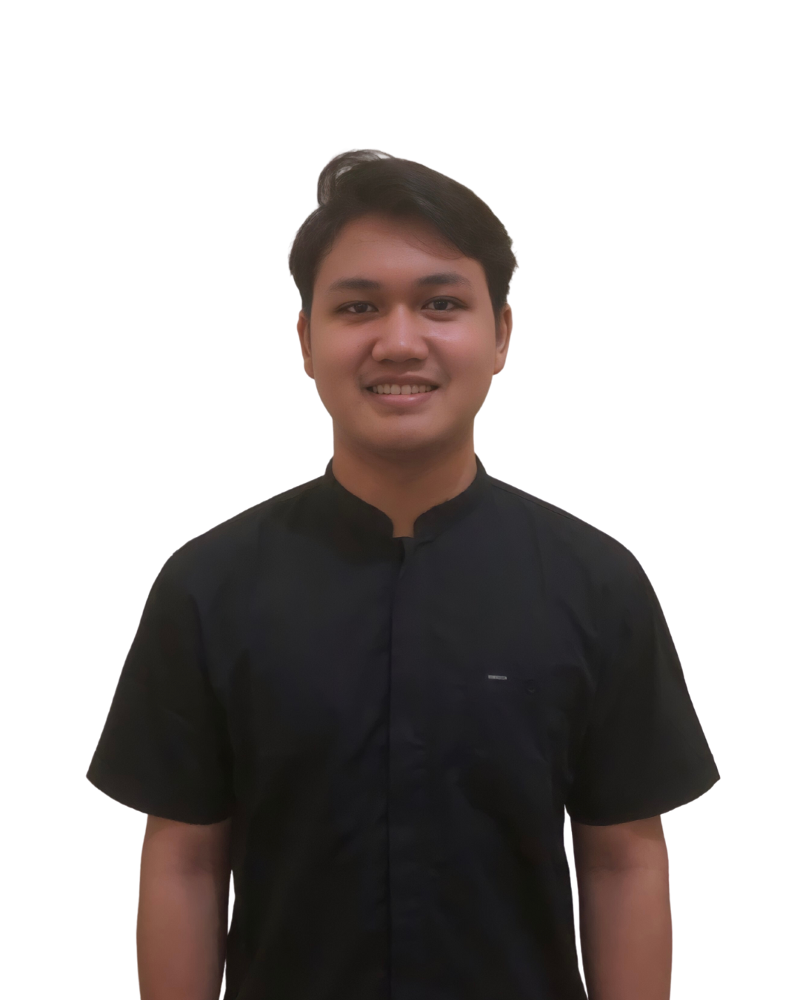
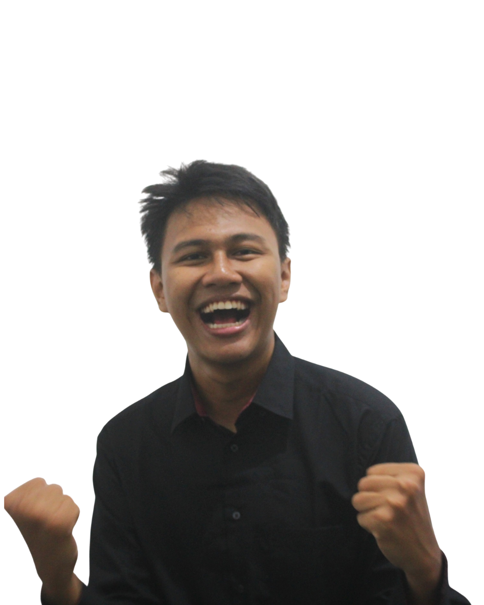
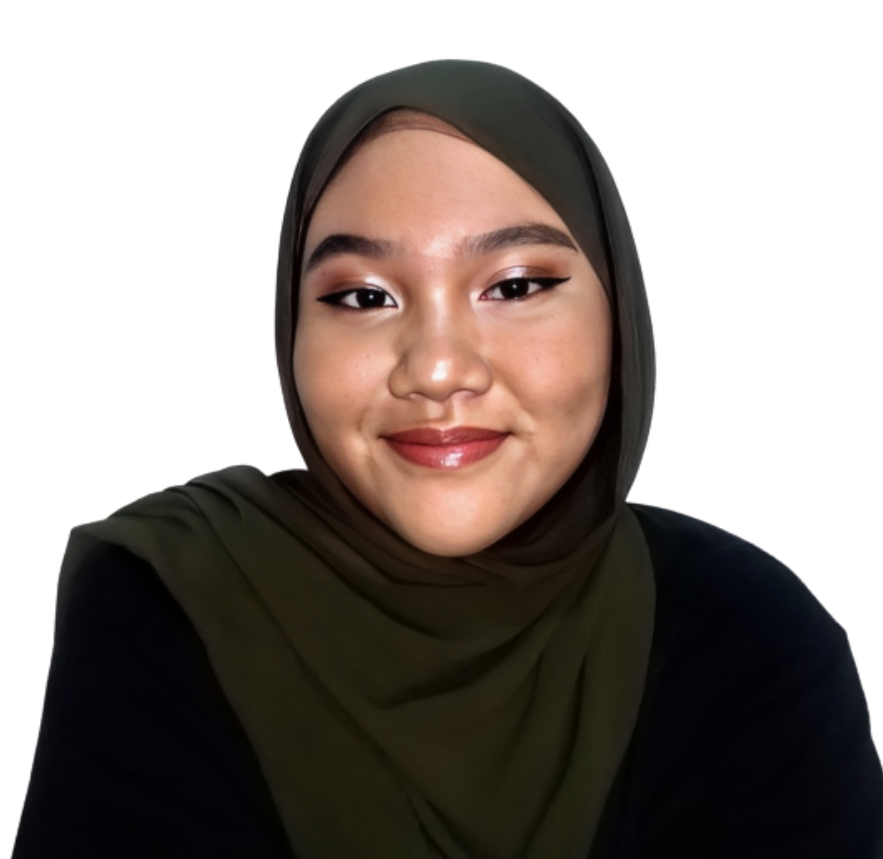

Awalnya kaget ya dipercaya buat jadi HOD Treasurer di Candidate College dari batch 3 kemudian lanjut ke batch 4. Seneng banget bisa gabung ke CC karena tentunya banyak pengalaman dan temen-temen baru yang aku dapetin. Even kita kerjanya profesional, tapi kalau ngobrol tetep santai banget kayak temen.
CC juga jadi tempat aku belajar banyak hal baru dan improved myself a lot. Intinya sih ga nyesel udah gabung ke CC selama 2 periode ini.
Dwi Putri Haryantari
Head of Division Treasurer

So happyyy rasanya bisa berproses di Candidate College ini, ga nyangka juga bakal bertahan di Candidate College selama hampir 1 tahun. Ga bisa dideskripsiin gimana rasanya bisa jadi bagian dari Candidate College yang culturenya gilaaakkk seru banget!! Apalagi selalu ketemu orang-orang yang sefrekuensi dan bisa sharing antar divisi lain yang tentunya bisa dapet insight baru. And i'm so luckyy bisa ketemu teman2 TE yang superr duperrr kompak.
Fara Berliana
Head of Division Talent Engagement

>awalnya b aja, karna masih ngerasa hah apaan sih, terus kya kok ga ngerangkul semua, kok kya yang deket” aja sih, ternyata itu cuma kya valuation yg sedikit salah dari aku ke kalian wahai cc, ya mungkin karna kita jg baru dipertemukan ya. at least, semua asik, walaupun ya aku kdg molor, mon maap aku magang+kegiatan kampus, tp kalian ttp supportive,
masih ngasih eval yg jg aku butuhin, dan masih byk healingnya ya bisa di blg. jujurly, even aku cape, kalo kalian lagi ribut di grup becanda” aku seneng, pertahanin terus ya cc, dan aku harap bisa wider lagi ngerangkulnya, semangat!
Frederick Ronaldo
Head of Division Social Media Specialist

Seneng banget diberi kesempatan untuk masuk menjadi bagian keluarga Candidate College batch 4 ini khususnya di Secretary, karena banyak banget hal baru yang aku pelajari disini, seperti mengatur jalannya pembuatan seluruh berkas kesekretariatan dari awal hingga didistribusikan dengan tepat dan tentunya bersama dengan teman-teman Secretary lainnya yang super duper solid dan gercep
Angelina Christy
Head of Division Secretary

Testimoni: Menjadi bagian dari Candidate College selama kurang lebih sembilan bulan membuat aku memiliki banyak pengetahuan baru. Aku dapat berkembang selama berproses, mulai dari staff hingga ditawarkan menjadi Head di divisi Public Relation. Bersyukur juga bisa menjadi bagian dari CC, karena CC organisasi yang sangat terstruktur, bisa mengenal bahkan akrab dengan teman di luar kampus, sikap kekeluargaannya, dan anggota-anggota yang ceria luar biasa. Aku juga berterima kasih kepada CC karna sudah menyediakan wadah untuk aku, teman-teman lainnya untuk berproses dan berkembang.
Lidya Natalia
Head of Division Public Relation

Seru banget bisa gabung dan jadi keluarga besar di Candidate College. Disini aku dapet banyak pengalaman dan pemahaman baru sebagai Head of Division,
terkhusus di Divisi Web Development. Leadership, manajemen waktu, dan berbagai kemampuan lain juga berkembang selama aku di Candidate College.
Said Nur Octavianto
Head of Division Web Development
Jujur seneng banget bisa join di CC, society nya humble dan proker kerjanya terstruktur dan di CC aku jadi belajar banyak hal baru tidak hanya dari divisi aku yang sekarang melainkan dari divisi lain juga. Sistem kerja CC yang lumayan easy to do dan bisa banget WFA. Jadi sudah siapkah ambil bagian di CC, SBL SBL seru banget lohh...
Odyssey Nanlohy
Head of Division Podcast

Selama berproses di People & Culture Candidate College Batch 4 ini, saya diberi kesempatan menjadi HoD yang kritis & solutif dalam setiap kendala yang ada. Saya sangat senang & bersyukur memiliki staf PnC yang adaptif serta memiliki inisiatif tinggi hingga membuat saya bisa berkembang lebih jauh, mulai dari memimpin rapat, memberikan masukan, timeline & arahan secara spesifik kepada staf PnC, serta memperhatikan kondisi internal untuk selalu konsisten dalam setiap pekerjaan yang dijalankan.
Prayogi Setyo Darminto
Head of Division People & Culture

Bersyukur banget dan masih gak nyangka aku dikasih kesempatan untuk bergabung di Candidate College dan dipercaya sebagai Head of Graphic Design. Di sini aku dapet banyak banget pengalaman bittersweet baru yang pastinya bisa bikin diri aku jauh lebih baik lagi. Senang juga dengan lingkungan organisasinya yang super friendly, aku jadi punya banyak teman baru yg super asik dari seluruh Indonesia. Thank you so much, CC!
Shafa Callista Raihana Arif
Head of Division Graphic Design

Overall bener-bener nyaman sama environment nya, walaupun adaptasi awal-awal tu rasanya mixed feelings, tapi satisfied banget sama GM, HoD lain and bu ketua. Banyak yang bisa dipelajari sebagai HoD dan juga sebagai anggota, susah seneng pasti dirangkul banget dan pastinya ga pernah ngerasa ditinggal sendiri-sendiri di sini.
Yemima Astrid
Head of Division Event Organizer

Satu kata yang dari gue buat CC. Cara kerjanya, lingkungan pertemanan, bahkan hal hal yang tadinya gue engga tau. Ketemu temen-temen yang ternyata satu frekuensi itu nilai plus banget sih. Pokoknya, it’s very worthy to join Candidate College!
Rizka Ramadhanti
Head of Division Content Writer

Omegat jujurly seneng banget bisa menjadi bagian di CC ini, banyak sekali hal yang aku dapat dari bergabungnya aku disini, dari awalnya aku seorang staff dan sekarang dapat kepercayaan menjadi Head of Division perubahan yang sangat signifikan buat hidup aku. Aku bisa survive banyak hal disini, selain itu lingkungan kerja yang ada juga sangat membantu dan support aku buat menyelesaikan setiap pekerjaan. And aku bangga banget bisa kenal sama orang-orang di dalam sini dan bahkan kerja bareng. Pokoknya asikuy deh!
Riska Stephanie
Head of Division Content Creator

Jujur ga nyangka bisa dapet kesempatan jadi head of business development, dimana challenge banget bagi aku yang belum terlalu banyak pengalaman di bidang ini. Tapi berkat dukungan suportif dari panitia-panitia lain, proker divisi ini berhasil dijalankan dengan baik. Dari awal yang ragu-ragu takut, aku jadi belajar banyak banget di volunteer ini, aku jadi tahu apa yang diperlukan untuk kolaborasi dengan pihak eksternal, bagaimana caranya mencari revenue untuk organisasi CC. Meskipun jatuh-bangun buat nyiapin proker, tapi disini semuanya saling membantu sama yang lain jadi aku merasa di lingkungan yang suportif banget.
Jocelyn Cynara
Head of Division Business Development

Di CC bisa belajar banyak hal yang belum pernah aku pelajari sebelumnya. Senang juga karena disini bisa bertemu dengan staf yang dapat diajak bekerja sama dengan baik. Lingkungan kerja nya pun juga terasa kekeluargaannya.
Angeline Novena Tricia
Head of Division Brand Ambassador Supervisor